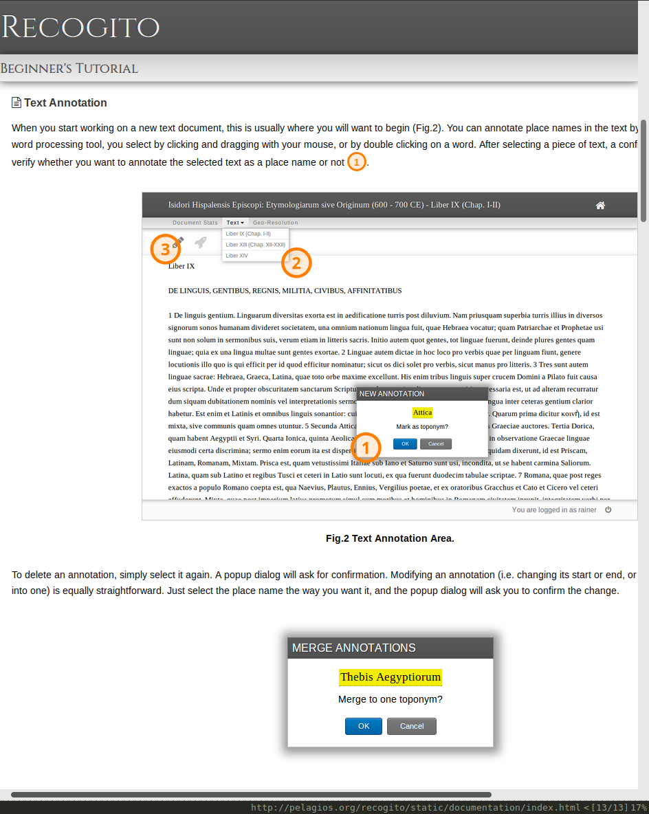
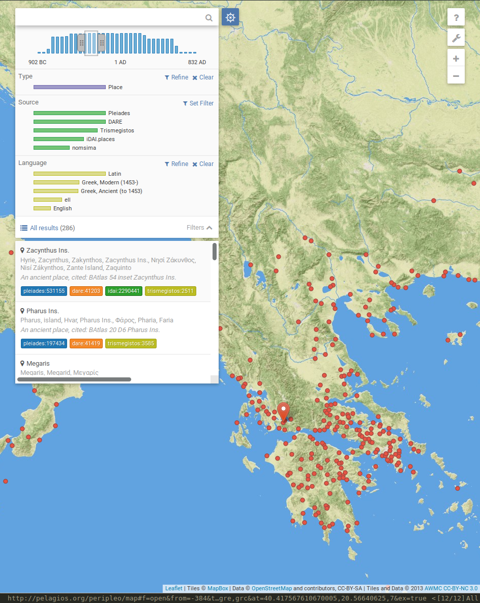
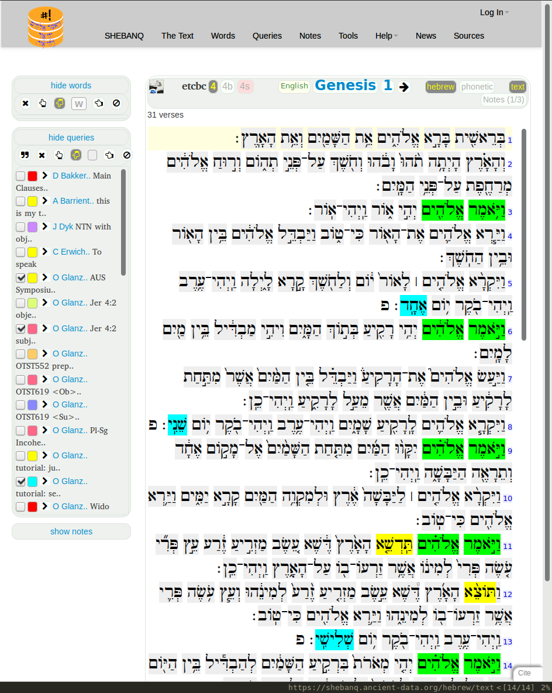
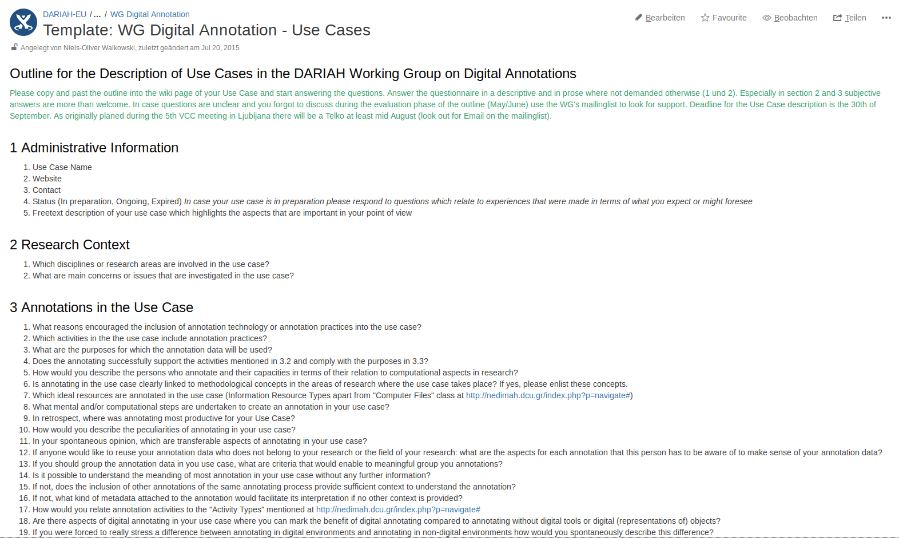

The Landscape of Digital Annotations and Its Meaning
Niels-Oliver Walkowski
cutuchiqueno
Language Technologies and Digital Humanities 2016 - Ljubljana
29.09.2016
DARIAH and the Working Group on Digital Annotations
Outline
- the state of digital annotations
- a survey on digital annotation practices
- a systematology for the evaluation of annotation practices and the contextualization of annotation data
- some thoughts on the development of annotating
State of Digital Annotations
Activities and Developments
- ESFRI Projects, EUROPEANA and PELAGIOS
- W3C Open Annotation and Web Annotation
- annotator.js and hypothes.is
- research field specific community projects
The Hierarchy Between Annotated Object and Annotation
Annotating, the act of creating associations between distinct pieces of information.
Sanderson et al. 2013
The Interchangeability Between Body and Target
 Annotations as First-Class Research-Publications

The Temporal Precedence of the Annotated Object

The Visibility of Annotations and the Range of Annotation Practices
collaboration, crowdsourcing and visibility
The Matrix of Digital Annotations and its Binarities
- private or public
- formal or informal
- subjective or factual
- information content or resource content
- stable or dynamic
- …
Questions to ask:
- what are annotations today or in the language of infrastructure projects, which best practices in annotating exist?
- what needs to be known from annotation contexts so that annotation data can be reasonably used elsewhere? In technical terms, what are the metadata needs?
The Meaning in Annotations
… or which context dimensions create an impact on the interpretability of annotations
Previous Efforts on the Interpretability of Annotations in the Digital Humanities
- Chiang: A Multi-Dimensional Approach to the Study of Online Annotation
- Bauer & Zierker: Whipping Boys Explained. Literary Annotation and Digital Humanities
- Open Annotation:
oa:motivatedBy oa:Motivation - Agosti: A historical and contemporary study on annotations to derive key features for systems design
- Gradmann: Beyond Infrastructure
DARIAH Working Group Questionnaire
The Fabrication of the Annotated Object
The Fragment Dimension
Facets and Modalities Behind the Surface of Annotated Objects
Transparency About the Semantics in the Annotation
The Dialogic Aspect of Annotations
Other Context Dimensions
- the user group and audience that is addressed
- the model, structure and renderability of the annotation itself
- the methodological research context in which annotations are created
- the type of availability of the annotated object
- the scientific goal of annotating
Embedding the Systematology
the expressivenes of metadata schemes for the description of annotation data is often not sufficient
vs.
the comprehensive description of annotation in all its dimensions is not feasible
Meaning Resides in and Metadata is Offered by
- the shape of infrastructures and social environments
- by human actions and computational processes in and between these environments
- communication about and formal semantics in these environments
as long as there is a certain sense of stability among them
An Environmental Approach to Interoperability
- interoperability is not just formal semantics, it is also processes, human actions and shared understanding
- interoperability should be designed more by strategic publishing and communication goals of researchers
What's the Meaning of Digital Annotations
- we will find out the methodological meaning by describing annotation scenarios in a way that is informed by this or other systematologies on the level of technology, practice and semantics
- comparable efforts take place in the context of the Digital Methods and Practices Observatory (DiMPO) and the Scholarly Domain Model (SDM)
Decoupling of Annotation Data
- not only does annotating extend its scope of application …
- … also annotation data is able to decouple more and more from the methodological frame of its creation
Annotations, the Epitome of Scientific Knowledge Work With Digital Technologies
- today, digital annotating relates to any type of knowledge and knowledgwork in science
- they thereby give an example for how digital technologies tone down distinctions that were once more categorial
LTDH 2016
"Language Technologies" OR "Digital Humanities"
"Language Technologies" AND "Digital Humanities"
Thank You !!!
Presentation on
Cutuchiqueno/output
Talk to cutuchiqueno
Presented with reveal.js
Icons by Font Awesome
Created with VIM